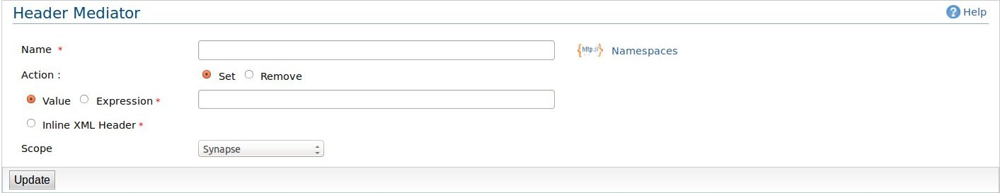

Header Mediator
The header mediator sets or removes a specified header from the current soap infoset.
The set header supports both simple valued headers and complex XML structured headers.

Figure1: Header Mediator
Here are the option you have in configuring the header mediator.
-
Name: Name of the header element, You can declare the namespace used in the header element by clicking
the Namespace link right to the text field.
-
Action: (Set/Remove), Specify whether you want to remove this header from the incomming message or set a new header,
Default to Set.
-
Value/Expression: A static value or an xpath expression that will be executed on the message to set the header value.
-
Inline XML Header: This parameter allows you to directly input any XML syntax related to the Header mediator (specifically for SOAP headers).